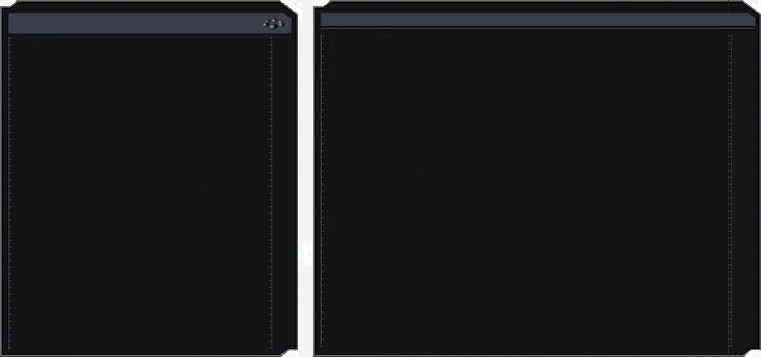
Frakcje
- Wolni Stalkerzy
- Bandyci
- Renegaci
- Powinność
- Wolność
- Najemnicy
- Ekolodzy
- Czyste niebo
- Monolit
- Wojskowi
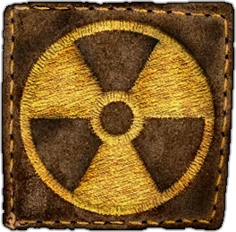
Wolni stalkerzy
Wolni stalkerzy znani także jako samotnicy to stalkerzy nienalerzący do żadnej z frakcji, działąjący samotnie lub w małych grupach. Stanowią oni najbardziej liczną grupę w zonie. Są oni neutralnie nastawieni do każdego z wyjątkiem bandytów, renegatów i monolitu.
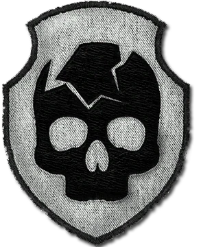
Bandyci
Bandyci to przedstawieciele świata przestępczego w zonie. Bandyci dzielą się na gangi działające oddzielnie od reszty. Najważniejsze są dla nich pieniądze a sposób ich zdobycia ich nie obchodzi.
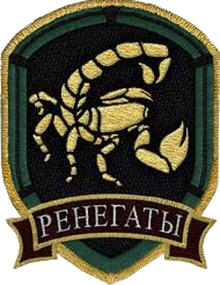
Renegaci
Renegaci to inny przykład przestępczości na terenie zony, jednak z powodu nie uznawania jakichkolwiek zasad moralnych oraz wyrzeczenia się bandyckich zasad odrzucają ich wszyscy, nawet bandyci. Baza renegatów znajdowała się na bagnach jednak po wydażeniach z czystego nieba zostali oni najpierw wyrzuceni z bagaien a następnie całkowici zniszczeni.
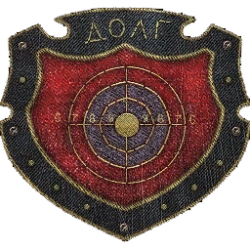
Powinność
Powinność to paramilitarna frakcja w której skłąda wchodzili byli wojskowi i stalkerzy dążący do ochrony świata przed zoną. Ich założycielem jest kapitan Taczenko który w powinności przyjął stopień generała. Podczas fabuły Czystego Nieba baza Powinności znajdowała się na terenie agropromu jednak po wydażeniach z Czystego Nieba powinność przniosłą się do Baru 100 radów, bliżej centrum zony. Ich największym wrogiem jest Wolność.
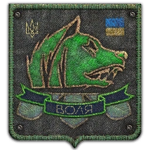
Wolność
Wolność to frakcja stalkertów składająca się z anarchistów i hipisów uważających że z zoną nalerzy współżyć. Otwarcie sprzeciwia się ona siłom żądowym i grupą badawczym. Ich baza podczas akcji Czystego Nieba znajdowała się w mrocznej dolinie lecz po wydażeniach z Czystego Nieba przenieśli się oni do magazynów wojskowych aby być bliżej centrum zony. Największym wrogiem Wolności jest Powinność.
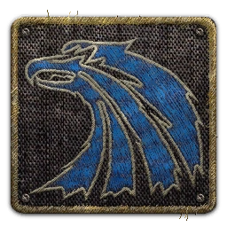
Najemnicy
Najemnicy to frakcja zajmująca się zabójstwami na zlecenie oraz poszukiwaniem dokumentów charakteryzująca się wysokim profesjonalizmem i jakością wykoywania zadania. Są oni jedną z najbardziej tajemniczych frakcji w zonie. Zabiją każdego kto zbyt się do nich zbliży lub wejdzie im w drogę.
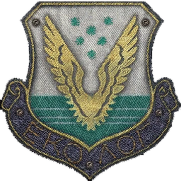
Ekolodzy
Ekolodzy to naukowcy badający Zonę. Korzystają oni z usłóg wojskowych oraz wolnych stalkerów w celu obrony oraz zdobycia nowego materiału do badania. W grach bazy ekologów można znaleźć w dwóch miejscach: Jantar(bunkier profesora sacharowa) oraz Jupieter(bunkier profesorów Herman i Oziorski)
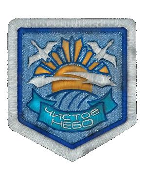
Czyste Niebo
Czyste Niebo to mało znana, izolująca się od innych frakcja zajmująca się badaniem zony z siedzibą na bagnach. Ich założyciele Lebiediew, Tuczkow i Susłow to byli członkowie świadomości-Z opdowiedzialnej za powstanie zony. Frakcja ta jest pokojowo nastawiona do innych jednak nie zawacha się użyć broni w przypadku zagrożenia. Pod koniec Akcji Czystego Nieba frakcja ta zostaję prawie całkowicie zniszczona w wyniku emisji na terenie elektrowni.
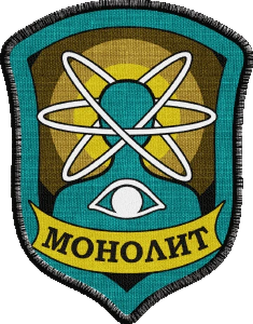
Monolit
Monolit to nastawiona wrogo do każdego sekta religijna wierząca w "Monolit". Chronią oni centrum zony i atakują każdego kto się zbliży. Początkowo frakcja ta była pokojowo nastawionym zrzeszeniem stalkerów którzy szukali tajemniczego artefaktu 'Monolitu', którzy pewnego razu wyruszyli w kierunku muzgozwęglacza i nie wrucili. W żeczywistości umysły członków Monolitu są kontrolowane przez świadomości-Z.
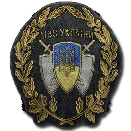
Wojskowi
Wojskowi to siły zbrojne ukrainy mające na celu strzec obwód zony tak aby nikt się nie przedostał oraz dostarczać żywność i eskortować naukowców. Wojskowi mają rozkaz aresztować lub zabić każdego kto przebywa na terenie zony bez pozwolenia, lecz zażają się przypadki gdzie wojskowi biorą łapówki za określone usługi np. przejście przez posterunek.